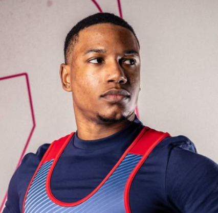
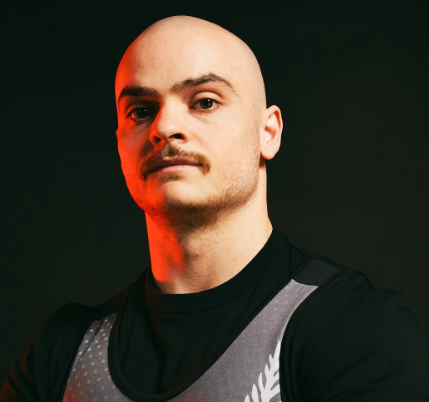
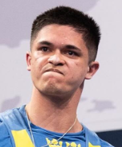

Sheffield est une compétition de powerlifting annuelle regroupant les meilleurs athlètes masculins et féminins des différentes catégories.
Le powerlifting, ou en français "force athlètique", est une discipline s'intéressant a avoir le plus gros total de charge sur trois mouvements :
Cette compétition a été instauré en 2023 et est organisée par le sponsor officiel SBD. Elle s'intéresse à pousser les limites des athlètes en se basant sur le pourcentage du total mondial de chaque catégorie. Il existe deux classements par catégorie de sexe, le but étant d'avoir le meilleur pourcentage du total mondial de sa catégorie.
Chaque participant a le droit à trois essais sur chaque mouvement, le but étant donc d'avoir le total le plus important sur chaque mouvement pour avoir le plus gros total possible. Si un athlète échoue ses trois tentatives sur un mouvement, sans être au standard selon les juges, alors il sera disqualifié.
| Rang | Athlète | Année | Squat | Bench | Deadlift | Total | % du WR |
|---|---|---|---|---|---|---|---|
| 1 | Austin Perkins  |
Sheffield 2026 | 341 kg | 207,5 kg | 343 kg | 891,5 kg | 105,75 % |
| 2 | Austin Perkins | Sheffield 2025 | 323 kg | 200 kg | 320 kg | 843 kg | 102,33 % |
| 3 | Timothy Monigatti  |
Sheffield 2024 | 288,5 kg | 170 kg | 331 kg | 789,5 kg | 98,7 % |
| 4 | Carl Johansson  |
Sheffield 2024 | 270 kg | 185 kg | 330,5 kg | 785,5 kg | 98,2 % |
| 5 | Timothy Monigatti | Sheffield 2023 | 285 kg | 170 kg | 325 kg | 780 kg | 98 % |